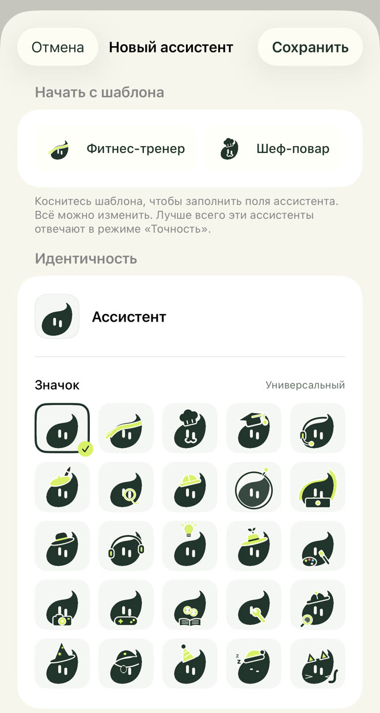
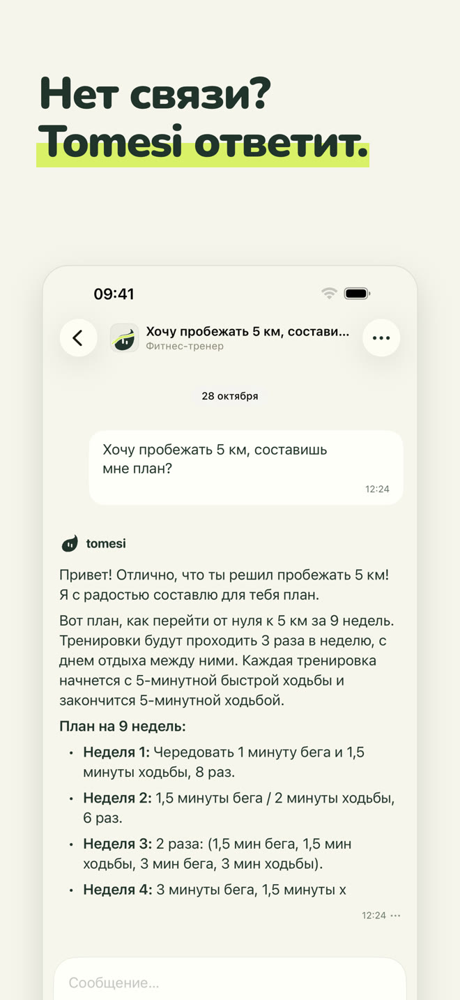
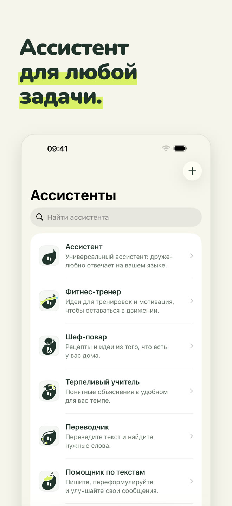
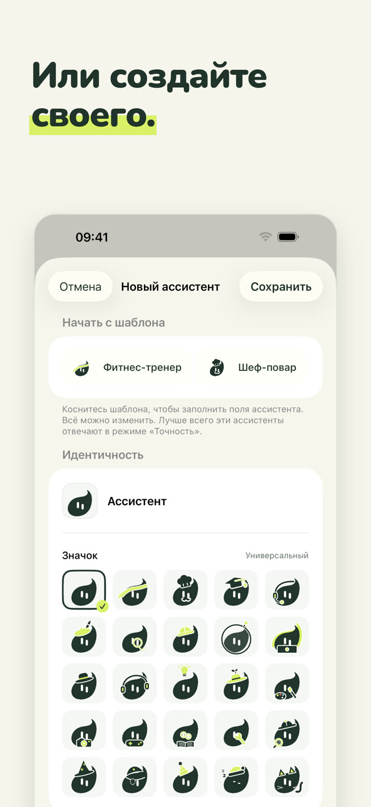
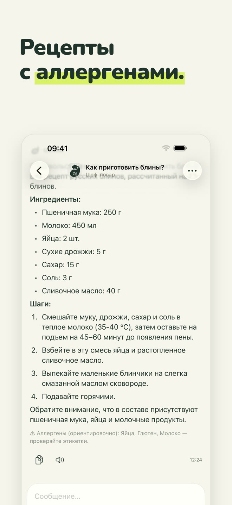
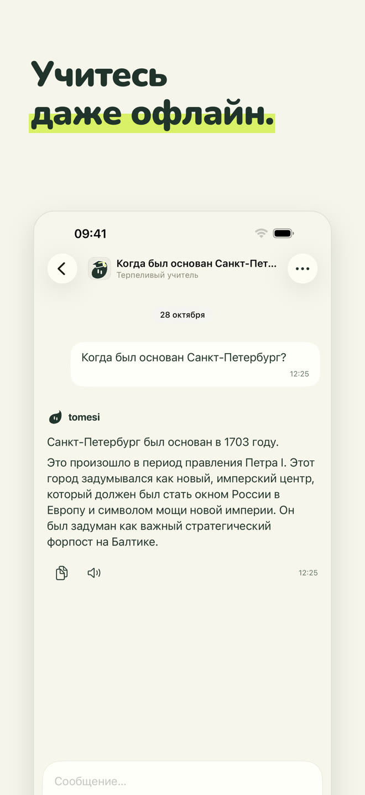
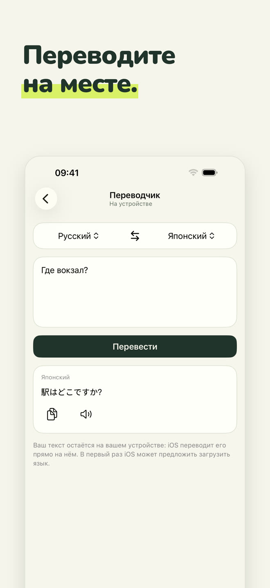
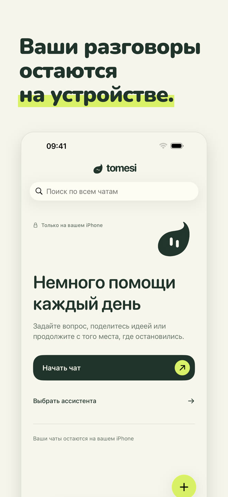

Полностью локальный ИИ-ассистент: он работает на вашем iPhone — в самолёте, в горах, за границей. То, что вы пишете, никогда не покидает телефон.
Загрузить в App StoreРазовая покупка · без аккаунта · без подписки
У каждого ассистента своя роль и своя манера отвечать. Выберите того, кто вам поможет, или просто говорите с универсальным ассистентом.
Универсальный: доброжелательно отвечает на вашем языке.
Тренировки под ваше время и инвентарь, планы неделя за неделей.
Простые рецепты из того, что есть, с указанием аллергенов.
Объясняет шаг за шагом, в вашем темпе: математика, история, естественные науки, грамматика.
Переводите текст между 13 языками прямо на месте.
Письма, сообщения, обращения; и исправление орфографии, ошибка за ошибкой.
Дайте ему имя, характер и одну из 25 пиктограмм Tomesi: ассистент на ваш вкус, который тоже пользуется справочными карточками приложения.

Маленькая модель не может знать всё. Tomesi хранит проверенные карточки и передаёт их ассистенту, когда тот отвечает.
Количества, шаги и аллергены — приложение показывает их под ответом.
14 стран, а также карточки по естественным наукам, географии и грамматике 14 языков.
И 65 карточек: планы на несколько недель, восстановление, питание, виды спорта.
Как любой ИИ, Tomesi может ошибаться: проверяйте важную информацию.







ИИ установлен на вашем iPhone. То, что вы пишете, никогда не отправляется в интернет и не хранится где-то ещё.
Без регистрации, без почты, без рекламы, без сбора данных.
Не нужно платить за серверы, поэтому нет подписки: приложение ваше.
Необязательный режим «Точность» загружает более мощную модель (около 3 ГБ) для ответов, где нужно больше тонкости.
Да. После установки приложения и ассистента Tomesi больше не нужен интернет: ИИ работает полностью на вашем iPhone. Проверьте в авиарежиме.
Никуда. Они остаются на вашем телефоне. У Tomesi нет сервера разговоров, учётной записи и рекламы. См. нашу политику конфиденциальности.
ChatGPT живёт на серверах: нужна связь, и ваши разговоры проходят через них. Tomesi живёт на вашем iPhone: он знает меньше облачного гиганта, но всегда под рукой, полностью конфиденциален и без подписки.
iPhone с 8 ГБ оперативной памяти (iPhone 15 Pro или новее) и iOS 26 или новее. Нужно около 3 ГБ свободного места и ещё 3 ГБ для необязательного режима «Точность».
Да, как любой ИИ. Рецепты, исторические даты и карточки приложения проверены и передаются ассистенту, что сильно сокращает ошибки, но важную информацию всегда проверяйте.
Tomesi переведён на 13 языков (русский, английский, французский, немецкий, испанский, итальянский, нидерландский, польский, португальский, японский, корейский, упрощённый китайский…), а ассистент понимает и отвечает на ещё большем числе языков.
Да. MonIA теперь называется Tomesi. Если вы уже купили его, покупать заново не нужно: просто обновите, и ваши разговоры останутся на телефоне.